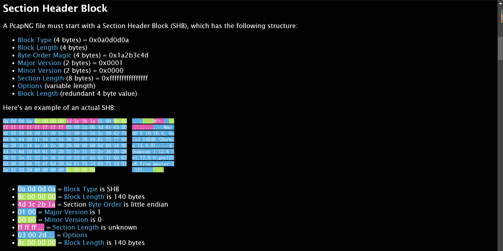
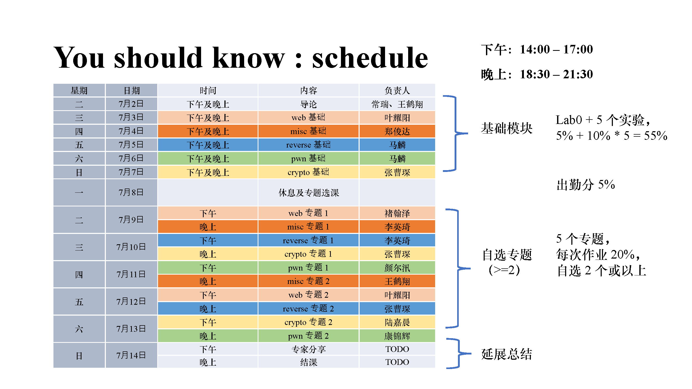

Tools
Summary
CTF 学习过程中用到的工具；后来也把一些比较好的文章放在里面了；如果前有一个 - 表示我还没具体看/用过，但是粗看还不错。
综合性网站¶
学习平台¶
练习&赛事平台¶
- ZJUBUS
- 需要 ZJU 校网
- NSSCTF
- BUUCTF
- -攻防世界
- cryptohack or -cryptopals
- -bugku
- Ethernaut 题库闯关题解
- ctftime
- 国内外知名赛事
- -CTF-writeups-public
MISC¶
- FileReverse-Tools
- “对二进制文件反转、倒置以及十六进制编码处理相关的工具，解决CTF和工作中的文件处理问题”
- CTFCrackTools
- 挺久没更新了
- -PuzzleSolver
- 现在获取需要一些“代价”
- misc总结(隐写篇)
图片类¶
- Aperi'Solve
- 图片一把梭
- Aperisolver
- 项目仓库，支持本地 dockers 运行
- steghide
- Barcode 阅读器
- 很多类型的二维码都能扫
- Barcode Generator
- 二维码生成器
- fotoforensics
- 图像取证分析
- blind_watermark
- 直接嵌入的盲水印
- BlindWaterMark
- 相似图嵌入的盲水印
- gaps
- 自动拼图
- Visual_cryptography
- 对两张图像进行异或
- 例题
-
- 图片宽高自动爆破修复
-
- 也许该好好看看？
压缩包¶
- APPNOTE-6.3.9.TXT
- 4.0 ZIP Files
- hashcat
- zip 伪加密检测
- CRC32-Tools
- CRC碰撞全自动化脚本
- bkcrack
音频类¶
- audio-decoder-adaptive
- 直接根据音频自己解莫斯密码
- slienteye
- audacity
- 常见题型
OSINT¶
Question
什么是 OSINT ？
-
- 一个巨大的开源信息站点收集项目
- 百度地图
- 高德地图
- saucenao
- GeoSpy
- 根据图片使用 AI 寻找地点（当然，不是很准，但是他的描述中可能会有你本来没注意到的地方）
- 太阳角度、阴影长度等太阳相关
- suncalc
- 时间→位置互相估计
- 飞机航班信息
- -flightaware
- -flightradar24
- -adsbexchange
- 估计方向，位置，时间等
- 风景信息→Yandex 搜索
-
天气信息、云层信息等
-
- 网页存档
-
网络空间搜索
- codesearch
- sourcegraph
流量分析¶

内存取证¶
区块链与以太坊¶
- remix
- solidity 在线编辑平台
- ethernaut
- 著名以太坊智能合约入门题目集
- Youtube上的讲解
- powfaucet
- sepolia 中 ETH 的获取源
- Ethereum Unit Converter
- 鹤翔万里——以太坊区块链合约安全基础
- -chainflag
简单编解码¶
- CyberChef
- 赛博厨子
- ciphey
- 自称快于 CyberChef，且捕获类似于 flag{content} 的结果（如果实际的 flag 比较奇怪，或者有一层混淆之类的，可能导致无法解出）
- 基本使用：
ciphey -t "encode_flag"ciphey -f flag.txt
- python-codext
- 能在 python 中使用，也能在命令行使用
- CaptfEncoder
- Tupper's self-referential formula
- Zero-Width Characters
- -basecrack <- base 系列爆破
- -base64decode 还支持文件解码
- 键盘按键代码
- Crypto CTFs Tricks
其他¶
- Poppler (software)
- 处理 pdf 的命令行工具。
- igfonts or Italic Text Generator
- 生成 Unicode 混淆字符，绕过 ASCII 过滤
- Alternate Data Streams (ADS)
- hex
- 在线十六进制编辑器
- List_of_file_signatures
- NATO phonetic alphabet
- -VirusTotal
- 文档、url 等病毒检测
- whitespace
- 奇奇怪怪的编程语言；居然有在线编译能运行它
- -ideone
Crypto¶
也许分类没那么正确，主要是否需要一些数学知识来区分古典密码和现代密码。
古典密码学¶
- quipqiup or SubstitutionBreaker
- 换位密码
- Boxentriq
- Code-Breaking, Cipher and Logic Puzzles Solving Tools
- cipher identifier
- caesar-cipher
- -vigenere-cipher
- -Vigenère Solver or -Vigenere
- 维吉尼亚密码，多挺多的，不知道哪个好用一些；密钥长度超过 30 就别想着能直接爆破了……
- codecs or codext
- 更全的解码 python 库
- 不明觉厉系列：
现代密码学¶
- factordb
- 大数因式分解，支持的数据大小是我所见过最大的；
- factordb-python 本地运行。
- OEIS
- 在线整数序列百科全书（On-Line Encyclopedia of Integer Sequences）
- proofWiki
- 数学性质（证明）查找
- Sage math
- GmSSL
- 国产商用密码开源库
- SSL tools
常用攻击脚本¶
Web¶
- Githack
- DNS lookup
- JWT
- BurpSuite
-
- 可以 debug 看到详细的正则匹配过程，然后利用匹配步数限制来绕过检测
- CTF Web信息搜集
- JS 总结
泛工具箱¶
- CTFtools-wiki
- Hello-ctf toolkit
- ctf-tools
- https://blog.51cto.com/hsqcpp/7939098
- Awesome-CTF
- CTFNOTE
- -ctfever
- -bugku
- -Openctf的工具箱
- UU在线工具
CTF101¶
